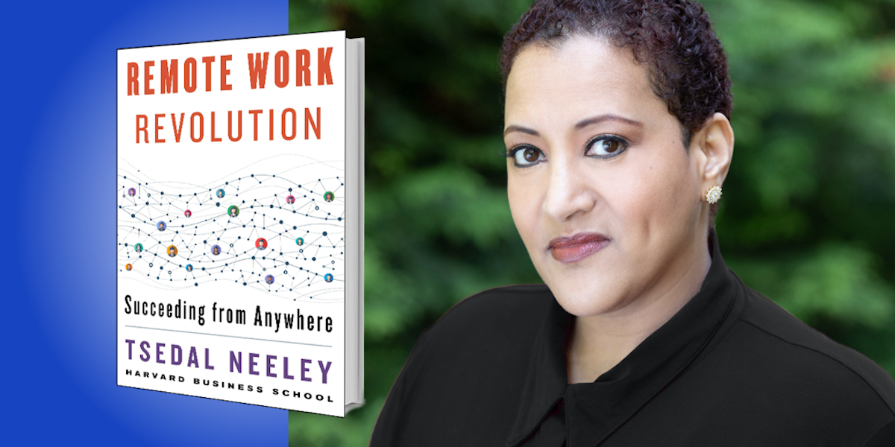

You can harvest Harvard’s MBA and learn from Experts like Tsedal


as it was stated in this article titled maybe stand for Standford because of people like Tsedal Neeley who went from this university and learned hardly to be now a professor of Harvard Business School teaching future business leaders How to better contribute to the success of companies that will shape our future everyday’s life. You also can harvest an MBA from Harvard and get the key knowledge that will allow you to be this woman tech business leader like all these men that are at the top successful tech ventures like Google, Amazon, Facebook, and all other billions dollar valued tech companies.
Solving business cases will be a skill that you will get from taking a seat into a business school like Harvard and this university have a quite special way of teaching business cases analysis as you discover with this video of Prof. Tsedal
Several digital native platforms are trying to emulate the programs of business schools by offering programs like Business valuation, Financial analysis, Business modeling, and every field in between using a fully digital channel but the physical collaborative way of learning like this one that you see in the video will for sure still stand for a long before being disrupted.
Prof. Clayton Christensen of Harvard already studied how the disruption of universities gonna happens using the lenses of his theory of disruption called the innovator dilemma. To say that Business schools like Harvard are well-minded about the coming threats of online education the full One Year MBAs that they are offering now come in response to these threats. Many of them are implementing online programs that compete with these new forms of alternative MBA like altMBA, Section 4,
But what’s the difference between a 5 week MBA program that costs $4,450 and a one-year MBA program that costs $19K. The one year program will for sure have twice more learning content than the 5-week program
https://www.linkedin.com/pulse/seth-godins-altmba-worth-honest-review-john-rau/
Most of these alternative education programs are led by entrepreneurs and professors who got their degrees from traditional MBAs. For example, Malcolm Gladwell offers Gladwell Academy as an alternative way of learning, Seth Godin initiated AltMBA while Tony Wagner an expert-in-residence at Harvard University’s Innovation Lab is behind MissionU acquired by WeWork, a venture which would surf the new wave of remote work revolution the topic of the Book of Tsedal Neeley. If You want to know why some experts are proposing alternative MBA options you can read this article.
But traditional MBAs have still a lot to offer and going into such kind of full MBA programs is still very important not only because of the status that their degrees offer but also because of people like Tsedal Neeley, the networks of academic searchers, experts, PhDs, into which you will be part and physical connections that you will have with people.
The digital transformation is not only affecting of we work but also how we learn and will be more and more shaping how we will live day by day.
that’s why it is important for you to go into an MBA and learn what matters in these new topics and trends of digital transformation. Hopefully, Professor Tsedal gives you a starting point with her book Remote work revolution which provides you insights into the transformation of the work by the disruption of distance allowed by all these communications and productivity tools spawned by technological innovations. We will for sure never work as we were years ago and the pandemic situation is accelerating the adoption of new working methods that will leverage more digital channels not only for team communication but for every operational process of a business and its ecosystem.